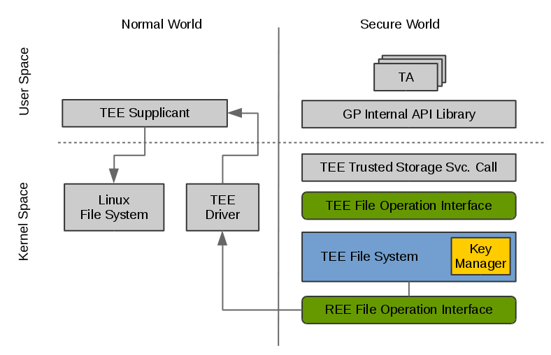
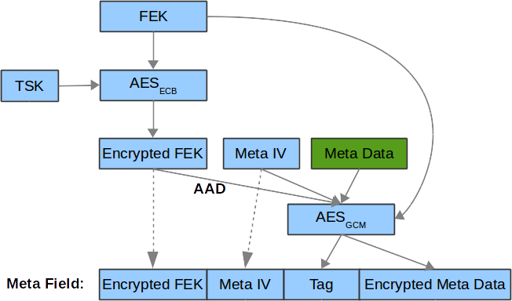
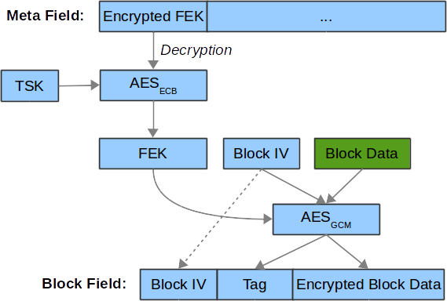

Secure storage
Background
Secure Storage in OP-TEE is implemented according to what has been defined in GlobalPlatform’s TEE Internal Core API (here called Trusted Storage). This specification mandates that it should be possible to store general-purpose data and key material that guarantees confidentiality and integrity of the data stored and the atomicity of the operations that modifies the storage (atomicity here means that either the entire operation completes successfully or no write is done).
There are currently two secure storage implementations in OP-TEE:
The first one relies on the normal world (REE) file system. It is described in this document and is the default implementation. It is enabled at compile time by
CFG_REE_FS=y.The second one makes use of the Replay Protected Memory Block (RPMB) partition of an eMMC device, and is enabled by setting
CFG_RPMB_FS=y. It is described in RPMB Secure Storage.
It is possible to use the normal world file systems and the RPMB implementations
simultaneously. For this, two OP-TEE specific storage identifiers have been
defined: TEE_STORAGE_PRIVATE_REE and TEE_STORAGE_PRIVATE_RPMB. Depending
on the compile-time configuration, one or several values may be used. The value
TEE_STORAGE_PRIVATE selects the REE FS when available, otherwise the RPMB FS
(in this order).
REE FS Secure Storage

Secure Storage System Architecture
Source Files in OP-TEE OS
Source file |
Purpose |
|---|---|
TEE trusted storage service calls |
|
TEE file system & REE file operation interface |
|
Hash tree |
|
Key manager |
|
GlobalPlatform Internal API library |
Basic File Operation Flow
When a TA is calling the write function provided by GP Trusted Storage API to write data to a persistent object, a corresponding syscall implemented in TEE Trusted Storage Service will be called, which in turn will invoke a series of TEE file operations to store the data. TEE file system will then encrypt the data and send REE file operation commands and the encrypted data to TEE supplicant by a series of RPC messages. TEE supplicant will receive the messages and store the encrypted data accordingly to the Linux file system. Reading files are handled in a similar manner.
GlobalPlatform Trusted Storage Requirement
Below is an excerpt from the specification, listing the most vital requirements:
1. The Trusted Storage may be backed by non-secure resources as long as
suitable cryptographic protection is applied, which MUST be as strong as
the means used to protect the TEE code and data itself.
2. The Trusted Storage MUST be bound to a particular device, which means
that it MUST be accessible or modifiable only by authorized TAs
running in the same TEE and on the same device as when the data was
created.
3. Ability to hide sensitive key material from the TA itself.
4. Each TA has access to its own storage space that is shared among all the
instances of that TA but separated from the other TAs.
5. The Trusted Storage must provide a minimum level of protection against
rollback attacks. It is accepted that the actually physical storage
may be in an insecure area and so is vulnerable to actions from
outside of the TEE. Typically, an implementation may rely on the REE
for that purpose (protection level 100) or on hardware assets
controlled by the TEE (protection level 1000).
(see GP TEE Internal Core API section 2.5 and 5.2)
If configured with CFG_RPMB_FS=y the protection against rollback is
controlled by the TEE and is set to 1000. If CFG_RPMB_FS=n, there’s no
protection against rollback, and the protection level is set to 0.
TEE File Structure in Linux File System
OP-TEE by default uses /data/tee/ as the secure storage space in the Linux
file system. Each persistent object is assigned an internal identifier. It is an
integer which is visible in the Linux file system as /data/tee/<file
number>.
A directory file, /data/tee/dirf.db, lists all the objects that are in the
secure storage. All normal world files are integrity protected and encrypted, as
described below.
Key Manager
Key manager is a component in TEE file system, and is responsible for handling data encryption and decryption and also management of the sensitive key materials. There are three types of keys used by the key manager: the Secure Storage Key (SSK), the TA Storage Key (TSK) and the File Encryption Key (FEK).
Secure Storage Key (SSK)
SSK is a per-device key and is generated and stored in secure memory when OP-TEE is booting. SSK is used to derive the TA Storage Key (TSK).
SSK is derived by
SSK = HMACSHA256 (HUK, Chip ID || “static string”)
The functions to get Hardware Unique Key (HUK) and chip ID depends on the platform implementation. Currently, in OP-TEE OS we only have a per-device key, SSK, which is used for secure storage subsystem, but, for the future we might need to create different per-device keys for different subsystems using the same algorithm as we generate the SSK; An easy way to generate different per-device keys for different subsystems is using different static strings to generate the keys.
Trusted Application Storage Key (TSK)
The TSK is a per-Trusted Application key, which is generated from the SSK and the TA’s identifier (UUID). It is used to protect the FEK, in other words, to encrypt/decrypt the FEK.
TSK is derived by:
TSK = HMACSHA256 (SSK, TA_UUID)
File Encryption Key (FEK)
When a new TEE file is created, key manager will generate a new FEK by PRNG (pesudo random number generator) for the TEE file and store the encrypted FEK in meta file. FEK is used for encrypting/decrypting the TEE file information stored in meta file or the data stored in block file.
Hash Tree
The hash tree is responsible for handling data encryption and decryption of a
secure storage file. The hash tree is implemented as a binary tree where each
node (struct tee_fs_htree_node_image below) in the tree protects its two
child nodes and a data block. The meta data is stored in a header (struct
tee_fs_htree_image below) which also protects the top node.
All fields (header, nodes, and blocks) are duplicated with two versions, 0 and 1, to ensure atomic updates. See core/tee/fs_htree.c for details.
Meta Data Encryption Flow

Meta data encryption
A new meta IV will be generated by PRNG when a meta data needs to be updated. The size of meta IV is defined in core/include/tee/fs_htree.h, likewise are the data structures of meta data and node data are defined in fs_htree.h as follows:
struct tee_fs_htree_node_image {
uint8_t hash[TEE_FS_HTREE_HASH_SIZE];
uint8_t iv[TEE_FS_HTREE_IV_SIZE];
uint8_t tag[TEE_FS_HTREE_TAG_SIZE];
uint16_t flags;
};
struct tee_fs_htree_meta {
uint64_t length;
};
struct tee_fs_htree_imeta {
struct tee_fs_htree_meta meta;
uint32_t max_node_id;
};
struct tee_fs_htree_image {
uint8_t iv[TEE_FS_HTREE_IV_SIZE];
uint8_t tag[TEE_FS_HTREE_TAG_SIZE];
uint8_t enc_fek[TEE_FS_HTREE_FEK_SIZE];
uint8_t imeta[sizeof(struct tee_fs_htree_imeta)];
uint32_t counter;
};
Block Data Encryption Flow

Block data encryption
A new block IV will be generated by PRNG when a block data needs to be updated. The size of block IV is defined in core/include/tee/fs_htree.h.
Atomic Operation
According to GlobalPlatform Trusted Storage requirement of the atomicity, the following operations should support atomic update:
Write, Truncate, Rename, Create and Delete
The strategy used in OP-TEE secure storage to guarantee the atomicity is out-of-place update.
RPMB Secure Storage
This document describes the RPMB secure storage implementation in OP-TEE, which
is enabled by setting CFG_RPMB_FS=y. Trusted Applications may use this
implementation by passing a storage ID equal to TEE_STORAGE_PRIVATE_RPMB, or
TEE_STORAGE_PRIVATE if CFG_REE_FS is disabled. For details about RPMB,
please refer to the JEDEC eMMC specification (JESD84-B51).
The architecture is depicted below.
| NORMAL WORLD : SECURE WORLD |
:
U tee-supplicant : Trusted application
S (rpmb.c) : (secure storage API)
E ^ ^ : ^
R | | : |
~~~~~~~ ioctl ~~~~~~~|~~~~~~~~~~~~:~~~~~~~~~~~~~~~~~~|~~~~~~~~~~~~~~~~~~~~
K | | : OP-TEE
E v v : (tee_svc_storage.c)
R MMC/SD subsys. OP-TEE driver : (tee_rpmb_fs.c, tee_fs_key_manager.c)
N ^ ^ : ^
E | | : |
L v | : |
Controller driver | : |
~~~~~~~~~~~~~~~~~~~~~~~~~~~~|~~~~~~~~~~~~~~~~~~~~~~~~|~~~~~~~~~~~~~~~~~~~~
v v
Secure monitor / EL3 firmware
For information about the ioctl() interface to the MMC/SD subsystem in the
Linux kernel, see the Linux core MMC header file linux/mmc/core.h and the
mmc-utils repository.
The Secure Storage API
This part is common with the REE-based filesystem. The interface between the
system calls in core/tee/tee_svc_storage.c and the RPMB filesystem is the
tee_file_operations, namely struct tee_file_ops.
The RPMB filesystem
The FS implementation is entirely in core/tee/tee_rpmb_fs.c and the RPMB partition is divided in three parts:
The first 128 bytes are reserved for partition data (
struct rpmb_fs_partition).At offset 512 is the File Allocation Table (FAT). It is an array of
struct rpmb_fat_entryelements, one per file. The FAT grows dynamically as files are added to the filesystem. Among other things, each entry has the start address for the file data, its size, and the filename.Starting from the end of the RPMB partition and extending downwards is the file data area.
Space in the partition is allocated by the general-purpose allocator functions,
tee_mm_alloc(...) and tee_mm_alloc2(...).
All file operations are atomic. This is achieved thanks to the following properties:
Writing one single block of data to the RPMB partition is guaranteed to be atomic by the eMMC specification.
The FAT block for the modified file is always updated last, after data have been written successfully.
Updates to file content is done in-place only if the data do not span more than the “reliable write block count” blocks. Otherwise, or if the file needs to be extended, a new file is created.
Device access
There is no eMMC controller driver in OP-TEE. The device operations all have to
go through the normal world. They are handled by the tee-supplicant process
which further relies on the kernel’s ioctl() interface to access the device.
tee-supplicant also has an emulation mode which implements a virtual RPMB
device for test purposes.
- RPMB operations are the following:
Reading device information (partition size, reliable write block count).
Programming the security key. This key is used for authentication purposes. Note that it is different from the Secure Storage Key (SSK) defined below, which is used for encryption. Like the SSK however, the security key is also derived from a hardware unique key or identifier. Currently, the function
tee_otp_get_hw_unique_key()is used to generate the RPMB security key.Reading the write counter value. The write counter is used in the HMAC computation during read and write requests. The value is read at initialization time, and stored in
struct tee_rpmb_ctx, i.e.,rpmb_ctx->wr_cnt.Reading or writing blocks of data.
RPMB operations are initiated on request from the FS layer. Memory buffers for
requests and responses are allocated in shared memory using
thread_rpc_alloc_payload(...). Buffers are passed to the normal world in
a TEE_RPC_RPMB_CMD message, thanks to the thread_rpc_cmd() function.
Most RPMB requests and responses use the data frame format defined by the JEDEC
eMMC specification. HMAC authentication is implemented here also.
Security considerations
The RPMB partition in eMMC can not be accessed until a key has been programmed on the device: this is a one time action for the lifetime of the device. Once the key has been written on the eMMC controller, the controller uses it to authenticate requests.
This key can be programmed in a number of ways. If you want OP-TEE to do it,
OP-TEE must be configured with CFG_RPMB_WRITE_KEY=y.
Warning
Be aware that this configuration will send the RPMB key in clear to the non-secure side that relays the RPMB key programming request to the eMMC hardware device.
OP-TEE can either embed a built-in RPMB key (CFG_RPMB_TESTKEY=y) or derive
it from platform specific secrets (CFG_RPMB_TESTKEY=n). The former case
might be useful during development while the later is recommended for production
devices.
Deriving the key from secrets avoids OP-TEE from having to store it in memory therefore reducing the attack surface; OP-TEE derives the RPMB key from an internal set that includes the eMMC serial number and more importantly the Hardware Unique Key (HUK).
For this configuration to be effective, the Hardware Unique Key - a unique identifier for the particular instantiation of the SoC - must not be publicly accessible (please notice that not all platforms might be enforcing this requirement).
The need to keep the HUK secret is the reason why on security aware systems, the hardware will generate different HUK values depending on the security state of the platform: said differently, the SoC will generate different HUK depending if the BOOT ROM it is configured to boot signed images or not.
However notice that, since the RPMB key can only be written once on the
controller, it follows that accessing RPMB before securing the board will cause
future RPMB accesses to be denied once the board has been secured.
To prevent this situation from happening, OP-TEE provides a software hook which
platforms shall use to implement its security logic
plat_rpmb_key_is_ready().
Warning
For OP-TEE to be able to write the RPMB key, CFG_RPMB_WRITE_KEY=y must be
configured and plat_rpmb_key_is_ready() must allow it at runtime.
Encryption
The FS encryption routines are in core/tee/tee_fs_key_manager.c. Block encryption protects file data. The algorithm is 128-bit AES in Cipher Block Chaining (CBC) mode with Encrypted Salt-Sector Initialization Vector (ESSIV), see CBC-ESSIV for details.
During OP-TEE initialization, a 128-bit AES Secure Storage Key (SSK) is derived from a Hardware Unique Key (HUK). It is kept in secure memory and never written to disk. A Trusted Application Storage Key is derived from the SSK and the TA UUID.
For each file, a 128-bit encrypted File Encryption Key (FEK) is randomly generated when the file is created, encrypted with the TSK and stored in the FAT entry for the file.
Each 256-byte block of data is then encrypted in CBC mode. The initialization vector is obtained by the ESSIV algorithm, that is, by encrypting the block number with a hash of the FEK. This allows direct access to any block in the file, as follows:
FEK = AES-Decrypt(TSK, encrypted FEK); k = SHA256(FEK); IV = AES-Encrypt(128 bits of k, block index padded to 16 bytes) Encrypted block = AES-CBC-Encrypt(FEK, IV, block data); Decrypted block = AES-CBC-Decrypt(FEK, IV, encrypted block data);
SSK, TSK and FEK handling is common with the REE-based secure storage, while the AES CBC block encryption is used only for RPMB (the REE implementation uses GCM). The FAT is not encrypted.
REE FS hash state
If configured with both CFG_REE_FS=y and CFG_RPMB_FS=y the REE FS will
create a special file, dirfile.db.hash in RPMB which hold a hash
representing the state of REE FS.
Important caveats
Warning
Currently some OP-TEE platform are not able to support retrieval of the Hardware Unique Key or Chip ID required for secure operation. For those platforms, a constant key is used, resulting in no protection against decryption, or Secure Storage duplication to other devices. This is because information about how to retrieve key data from the SoC is considered sensitive by some vendors and it is not publicly available.
To allow Secure Storage to operate securely on your platform, you must define implementations in your platform code for:
void tee_otp_get_hw_unique_key(struct tee_hw_unique_key *hwkey);
int tee_otp_get_die_id(uint8_t *buffer, size_t len);
These implementations should fetch the key data from your SoC-specific e-fuses, or crypto unit according to the method defined by your SoC vendor.
References
For more information about secure storage, please see SFO15-503, LAS16-504, SFO17-309 at Presentations and the TEE Internal Core API specification.